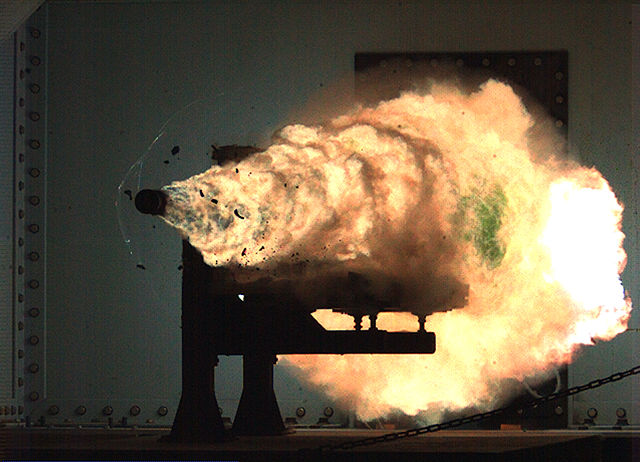

Força de Lorentz
Em física, a força de Lorentz é resultado da superposição da
força elétrica proveniente de um campo elétrico
E com a força magnética devida a um campo magnético
B atuando sobre uma partícula carregada
eletricamente que se move no espaço. Tal força é dada pela
fórmula:
$$ \mathbf{F} = q(\mathbf{E} + \mathbf{v} \times \mathbf{B}) $$
Evidentemente, para que a superposição ocorra é necessário que a
partícula possua uma carga elétrica líquida não nula e esteja em
movimento em uma região do espaço onde haja um campo magnético.
Analisando apenas as forças de caráter elétrico, se a velocidade
v
for nula, a partícula estará somente sob influência da força
elétrica:
$$ \mathbf{F} = \mathbf{Fe} = q\mathbf{E} $$
A contribuição a F devida à força elétrica
Fe é paralela ao campo elétrico E,
resultando em aceleração da partícula carregada na mesma direção
e sentido do campo; uma partícula com carga negativa sofrerá
aceleração no sentido contrário ao do campo. A contribuição
referente à força magnética é sempre perpendicular ao campo
B e à velocidade v, simultaneamente,
conforme dita a regra do produto vetorial.
Artigo sobre:
Força de Lorentz

Artigo abrange tais conteudos abaixo:
Vale a pena notar que a força magnética não realiza trabalho, uma
vez que é perpendicular ao deslocamento (ou seja, não existe
componente de Fm na direção de v
). A força magnética altera a direção da velocidade sem alterar o
seu módulo. Porém, como a força de Lorentz possui uma componente
devida ao campo elétrico, essa, sim, pode realizar trabalho.
Algumas referências[1] definem a
força de Lorentz apenas como a componente de origem magnética, dando
à força eletromagnética total algum outro nome. Neste artigo, o
termo força de Lorentz refere-se à força elétrica mais a força
magnética. A componente magnética da força de Lorentz se manifesta
também como a força que atua em um fio conduzindo uma corrente
elétrica imerso em uma região com campo magnético, também conhecida
como força de Laplace.
História
Joseph Priestley, amigo de Benjamin Franklin, foi o primeiro a
publicar, em 1767, a lei que ditava a força entre duas cargas
elétricas a determinada distância, após o pedido de seu amigo para
confirmar o resultado de uma experiência que havia realizado[2]. A lei de força entre polos magnéticos (força essa já citada por
Isaac Newton em seu Principia) foi descoberta por John Michell,
inventor da balança de torção, que publicou seus resultados em 1750.
Em suas palavras:
"A atração e repulsão entre 'imãs' diminui enquanto o quadrado
da distância entre os respectivos polos aumenta".
Depois de Michell, o resultado foi confirmado por Tobias Meyer em
1760 e pelo famoso matemático Johann Heinrich Lambert em 1766. A lei
de Coulomb foi publicada por Charles Augustin de Coulomb apenas em
1785. Em todas essas definições, a força é sempre descrita em termos
das propriedades e distâncias dos objetos envolvidos, sem menções a
"campo magnético" ou campo "elétrico".
Apesar da força de Lorentz levar o nome do físico holandês, sua
expressão foi encontrada por diversos personagens da Física, em
diferentes anos[3].
Comumente a força de Lorentz é atribuída a Joseph John Thomson e
Oliver Heaviside. Em abril de 1881, Thomsom publicou um artigo[4]
onde apresentava a expressão para a força exercida sobre uma
partícula eletrizada em movimento numa região de campo magnético.
Neste artigo, Thomson partiu da ideia, baseada na teoria de Maxwell,
que a variação temporal do vetor deslocamento elétrico
D
em um dielétrico produz efeitos análogos aos de uma corrente de
condução. Thomson encontrou um resultado que é metade do valor hoje
aceito:
$$ \mathbf{F} = \frac{q}{2}\mathbf{v} \times \mathbf{B} $$
Em novembro de 1881, FitzGerald publica um artigo apontando uma má
interpretação em relação à corrente de deslocamento na publicação de
Thomson. E em abril de 1889 Heaviside publica um artigo[5]
onde apresenta a expressão hoje usada para descrever a força
magnética. A equação da força que inclui a contribuição simultânea
do campo elétrico e magnético foi escrita somente em 1892, por
Hendrik Antoon Lorentz, em um artigo publicado no volume 25 dos
Archives Néerlandaises des Sciences Exactes et Naturelles. Chamada
por ele de "força ponderomotiva", a hoje denominada a força de
Lorentz foi obtida com o auxílio de seis hipóteses, a partir de uma
perspectiva mecânica, e das equações de Maxwell. A dedução feita por
Lorentz pode ser encontrada na página 35 da referência.
Força de Lorentz em termos de campos potencias
O campo elétrico E e magnético B podem ser
escritos em termos do potencial eletrostático ϕ e do
vetor potencial magnético A, respectivamente.
$$ \mathbf{E} = - \nabla \phi - \frac{\partial \mathbf{A}}{\partial
t} $$ $$ \mathbf{B} = \nabla \times \mathbf{A} $$
Assim, a equação para a força de Lorentz se torna:
$$ \mathbf{F} = q \left[ - \nabla \phi - \frac{\partial
\mathbf{A}}{\partial t} + \mathbf{v} \times \left( \nabla \times
\mathbf{A} \right) \right] $$
Aplicando a identidade de produto vetorial triplo, a equação se
simplifica para:
$$ \mathbf{F} = q \left[ - \nabla \phi - \frac{\partial
\mathbf{A}}{\partial t} + \nabla (\mathbf{v} \cdot \mathbf{A}) -
(\mathbf{v} \cdot \nabla) \mathbf{A} \right] $$
Confinamento magnético
Com uma configuração adequada das linhas do campo magnético, é
possível o confinamento de partículas carregadas. Tal confinamento
magnético é uma dos modos utilizados em reatores nucleares de fusão
como o Tokamak e o Stellarator para o aprisionamento do plasma a
altíssimas temperaturas e pressões necessárias para a realização de
uma reação de fusão nuclear[7]. A configuração de linhas de campo magnético utilizada é parecida
com a existente no caso de um fio enrolado na forma de um solenóide,
onde o campo magnético é paralelo ao eixo desse. No caso do Tokamak,
tem-se algo parecido com uma bobina fechada, disposta na forma de um
toróide, de forma que plasma interior execute uma trajetória
espiralada ao redor das linhas de campo.
confinamento magnético também é usado para a criação de armadilhas
para antimatéria. Para evitar sua aniquilação por contato com a
matéria, uma combinação de campos elétricos e magnéticos em vácuo é
utilizada para aprisionar antimatéria.
O campo magnético terrestre possui linhas que saem do pólo sul
magnético e entram pelo pólo norte magnético e é capaz de aprisionar
partículas carregadas formando o Cinturão de Van Allen. As
partículas no cinturão são provenientes, em sua maioria, dos ventos
solares e dos raios cósmicos, e se dispõem em duas regiões:
-
o cinturão mais interno é composto por elétrons e prótons com
altas energias, provenientes do decaimento de nêutrons produzidos
pelos raios cósmicos que colidem com os átomos da atmosfera
terrestre. Tais nêutrons, após a colisão, são ejetados para fora e
se desintegram ao passar pela região cinturão. Os prótons e
elétrons ficam confinados na região do cinturão, devido ao intenso
campo magnético existente, e se movem em trajetórias espirais ao
longo de linhas de força gerada pelo campo.
-
a região mais externa do cinturão possui elétrons mais
energéticos, do que na camada mais interna, e íons, tais como
partículas alfa e O+, de forma similar à ionosfera, porém muito
mais energético.
O canhão elétrico: "RailGun"
Também existem pesquisas sendo feitas para o desenvolvimento de
armamentos militares que utilizam a força de Lorentz para
impulsionar seus projeteis. O Railgun é formado de dois trilhos,
por onde desliza uma haste que segura um projétil, formando
assim um circuito fechado (junto com um gerador). Tanto os
trilhos, como a haste, são condutores. Uma corrente elétrica
entra por um dos trilhos, passa pela haste, regressando pelo
trilho paralelo. Quando a corrente passa pelo trilho, esta gera
um campo magnético em torno do próprio trilho (da mesma forma
que uma corrente passando por um fio forma um campo magnético
circular). Como a corrente que passa no trilho paralelo segue na
direção oposta, o campo gerado entre os trilhos não é anulado. A
corrente, ao passar pela haste, transversal ao trilho, gera uma
força que impulsiona a própria haste (junto com o projétil).
Em aplicações militares, a corrente elétrica utilizada é da
ordem de 5 MA durante alguns milissegundos, gerando campos da
ordem de 10 T (o campo magnético da Terra não ultrapassa 1
microtesla). Em dezembro de 2010, o "US Office of Naval Research
- ONR" (Escritório de pesquisas navais dos Estados Unidos)
realizou um tiro utilizando 32 MJ. O projetil de 10,4 kg atingiu
a velocidade de 9 000 km/h (mach 7).
Como já supracitado, os railguns ainda estão em fase de pesquisa
e desenvolvimento, mas têm o potencial de revolucionar a
artilharia devido à sua capacidade de disparar projéteis com
maior velocidade e alcance do que as armas tradicionais.
RailGun

Frame retirado de um projétil viajando a 2520 m/s
Referências
-
Griffiths, David J.. Eletrodinâmica, 3ª edição.
-
Whittaker, Sir Edmund. A History of the Theories of the Aether
and Electricity, Vol. 1: The Classical Theories, London: Thomas
Nelson and Sons Ltd., 1951 (revised and enlarged edition of the
publication of 1910), p. 53.
-
Tese de José Edmar Arantes Ribeiro - USP, "Sobre a Força de
Lorentz, Os Conceitos de Campo e a 'Essência' do
Eletromagnetismo Clássico".
-
Thomson, Sir J. J.. "On the Electric and Magnetic Effects
Produced by the Motion of Electrified Bodies", Philosophical
Magazine and Journal and Science 11: 229-49, 1881.
-
Heaviside, O.. "On the Electromagnetic Effects due to the
Motion of Electrification in a Dielectric", Philosofical
Magazine and Journal of Science 27: 324-39, 1889.
-
Mechanics (2a edição), Keith R. Symon, University of Wisconsin,
Addison-Wesley
-
Como funcionam os reatores de fusão nuclear - Como tudo
funciona (How Stuff Works) Arquivado em 8 de agosto de 2012, no
Wayback Machine..
-
Cinturão de Van Allen - HowStuffWorks - Discovery
Communications.
-
Railgun (Canhão Elétrico) - Wikipédia, a enciclopédia livre.